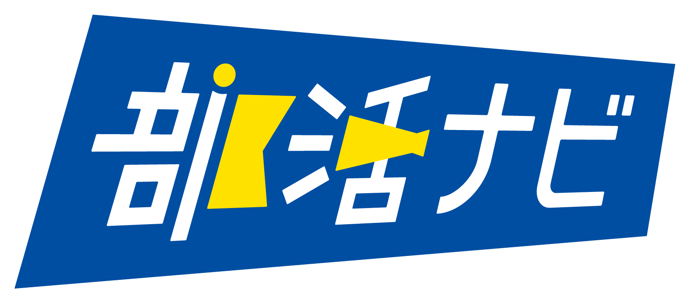
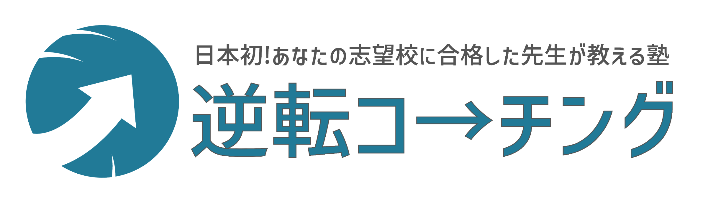

<!doctype html>
<html lang="ja">
<head>
<meta charset="utf-8">
<meta name="viewport" content="width=device-width,initial-scale=1">
<title>協賛・協力｜NOTO Re:Bloom</title>
<meta name="description" content="NOTO Re:Bloomを応援してくださっている協賛企業・協力企業と、その取り組みをご紹介します。9月20日開催分の協賛募集は終了し、今後の連携相談は引き続き受け付けています。">
<meta name="theme-color" content="#184b3d">
<link rel="canonical" href="https://noto-rebloom.github.io/noto-rebloom/partner.html">
<meta property="og:type" content="website">
<meta property="og:site_name" content="NOTO Re:Bloom">
<meta property="og:title" content="協賛・協力｜NOTO Re:Bloom">
<meta property="og:description" content="NOTO Re:Bloomの活動を支えてくださっている企業・団体と、その取り組みをご紹介します。">
<meta property="og:url" content="https://noto-rebloom.github.io/noto-rebloom/partner.html">
<meta property="og:image" content="https://noto-rebloom.github.io/noto-rebloom/team-presentation.webp">
<meta name="twitter:card" content="summary_large_image">
<meta name="twitter:title" content="協賛・協力｜NOTO Re:Bloom">
<meta name="twitter:description" content="活動を支えてくださっている企業・団体と、その取り組みをご紹介します。">
<meta name="twitter:image" content="https://noto-rebloom.github.io/noto-rebloom/team-presentation.webp">
<link rel="icon" href="favicon.svg">
<link rel="stylesheet" href="site.css">
<link rel="stylesheet" href="refresh.css?v=20260813g">
<link rel="stylesheet" href="student-refresh.css?v=20260813c">
<link href="https://fonts.googleapis.com/css2?family=M+PLUS+Rounded+1c:wght@700;800;900&family=Noto+Sans+JP:wght@400;500;600;700;800;900&display=swap" rel="stylesheet">
<link rel="stylesheet" href="visual-conversion.css?v=20260817a">
<link rel="stylesheet" href="rebloom-unified.css?v=20260820main1">
<link rel="stylesheet" href="rebloom-polish.css?v=20260817e">
<link rel="stylesheet" href="rebloom-detail.css?v=20260817e">
<link rel="stylesheet" href="rebloom-refine.css?v=20260817n">
<link rel="stylesheet" href="rebloom-balance.css?v=20260817n">
<link rel="stylesheet" href="rebloom-tight.css?v=20260817q">
<link rel="stylesheet" href="rebloom-purpose.css?v=20260817q">
<link rel="stylesheet" href="rebloom-purpose-complete.css?v=20260817v">
<link rel="stylesheet" href="brand-refresh.css?v=20260820g">
<link rel="stylesheet" href="site-finishing.css?v=20260827c">
</head>
<body class="nr-new-partner">
<a class="skip-link" href="#main">本文へ移動</a>
<header class="site-header"><a class="brand" href="index.html"><span class="brand-mark"><span class="brand-sprout"></span></span><span><b>NOTO Re:Bloom</b><small>泥臭い挑戦で、能登を咲かせる。</small></span></a><nav class="site-nav" id="siteNav"><a href="index.html">ホーム</a><a href="learn.html">土地と企画</a><a href="event.html">泥ん子運動会</a><a aria-current="page" href="partner.html">協賛・協力</a><a href="diagnosis.html">花タイプ診断</a></nav><div class="header-actions"><a class="header-link" href="mailto:infonotorebloom@gmail.com">今後の連携を相談</a></div><button class="menu-button" aria-controls="siteNav" aria-expanded="false"><span></span><span></span><span></span><em>MENU</em></button></header>
<main id="main">
<section class="page-hero page-hero--partner nr-partner-top"><div class="container page-hero-grid"><div><p class="eyebrow"><span>協賛・協力</span><small>PARTNERS</small></p><h1>一緒に、この企画を<br><span class="headline-marker">支えてくださる皆さま。</span></h1><p>NOTO Re:Bloomは、たくさんの方の協力をいただきながら9月20日に向けて準備しています。このページでは、協賛企業・協力企業の皆さまと、その取り組みをご紹介します。</p><div class="button-row"><a class="btn btn--green" href="mailto:infonotorebloom@gmail.com">今後の連携を相談する</a></div></div><figure class="photo-frame"><figcaption>一つずつ相談しながら、開催に向けて準備を進めています。</figcaption></figure></div></section>
<section class="nr-sponsor-feature nr-sponsor-feature--spotlight" id="current-partners"><div class="nr-section-head"><p class="nr-kicker">SPONSOR PARTNER</p><h2>協賛パートナーとして、<br>活動を支えていただいています。</h2><p>ご支援への感謝を込めて、株式会社アーネストテクノロジーズの「部活ナビ」と、TechsPlus株式会社の「逆転コーチング」をご紹介します。</p></div><article class="nr-main-sponsor nr-main-sponsor--navi"><div class="nr-sponsor-identity"><span class="nr-badge">協賛企業</span><a class="nr-sponsor-logo" href="https://bukatsunavi.com/" target="_blank" rel="sponsored noopener" aria-label="部活ナビ公式サイト"></a><p>株式会社アーネストテクノロジーズ</p><small>READYFORを通じてNOTO Re:Bloomをご支援いただきました。</small></div><div class="nr-sponsor-story"><p class="nr-sponsor-thanks">SUPPORTED BY EARNEST TECHNOLOGIES</p><h3>部活で学校を選ぶ、という新しい選択肢。</h3><p>全国の高校・中学・大学の”部活”が検索できるサイトです。偏差値だけじゃない、部活動でも学校探しができる、部活動に特化した新しいメディアです。</p><div class="nr-navi-guide"><article><b>01</b><strong>部活から探す</strong><span>部活やエリア、学校タイプなどから探せます。</span></article><article><b>02</b><strong>見学・体験会</strong><span>気になる部活の見学・体験会を探せます。</span></article><article><b>03</b><strong>イベント</strong><span>部活動に関するイベント情報も探せます。</span></article></div><p class="nr-sponsor-note">学校選びの基準に「どんな部活があるか」を加えたい方へ。気にな部活から、次の学校を探してみてください。</p><div class="nr-actions"><a class="nr-btn nr-btn--purple nr-sponsor-primary" href="https://bukatsunavi.com/" target="_blank" rel="sponsored noopener">部活ナビで部活を探す ↗</a></div></div></article><article class="nr-main-sponsor nr-main-sponsor--gyakuten"><div class="nr-sponsor-identity"><span class="nr-badge">協賛企業</span><a class="nr-sponsor-logo nr-sponsor-logo--gyakuten" href="htttps://gyakuten-coaching.com/" target="_blank" rel="sponsored noopener" aria-label="逆転コーチング公式サイト"></a><p>TechsPlus株式会社</p><small>NOTO Re:Bloomの活動にご協賛いただいています。</small></div><div class="nr-sponsor-story"><p class="nr-sponsor-thanks">SUPPORTED BY TECHSPLUS</p><h3>志望校から逆算し、毎日の学忟を支える。</h3><p>「逆転コーチング」は、志望校合格げ$DMɥ�Ё�Ɍ�ͥє�������������݌���͍ɥ����͍ɥ�Ё����ȁ�Ɍ�ɕ������չ��������������������Ʌ��Ȉ��͍ɥ���𽉽����ѵ��